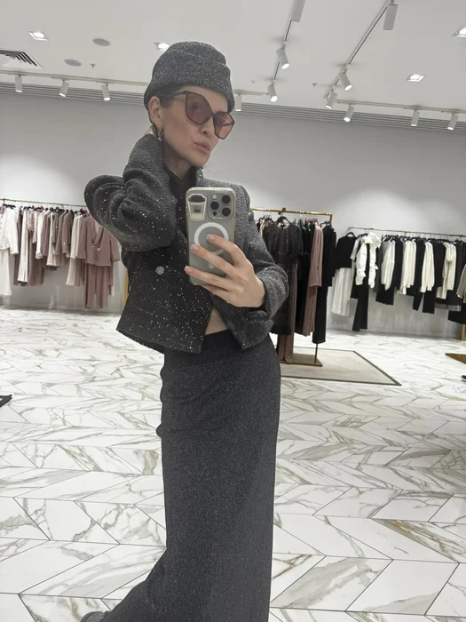
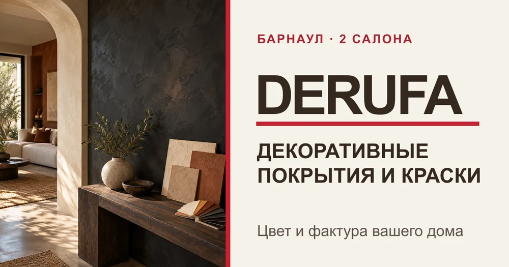
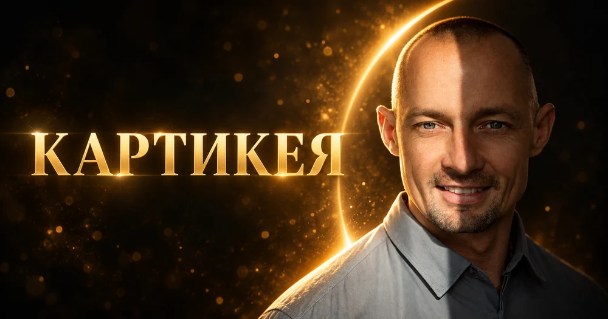
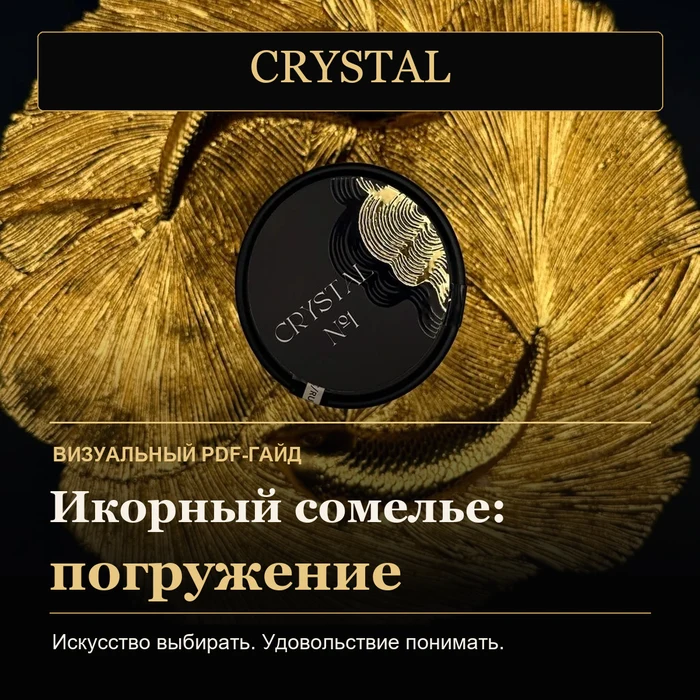

01ЭТАП
Настраиваем рабочую среду
Ты самостоятельно настраиваешь рабочую среду по пошаговому гайду-инструкции. Если возникнут вопросы, техспециалисты помогут в чате. Проверяем запуск ChatGPT / Codex.
РЕЗУЛЬТАТГотовое к работе ИИ-пространство.
↗
Собери свою ИИ-команду: агенты заберут рутину, помогут вести контент и продажи, собирать воронки и двигать бизнес вперёд.
Без программирования и найма целого штата. За два дня настроишь рабочую систему на базе ChatGPT и Codex и создашь своих первых агентов под реальные задачи.
Онлайн · 26–27 ноября · 21:00 по Барнаулу / 17:00 МСК
Эксперт по нейросетям,
ИИ-агентам и вайбкодингу
Запрос → задание → готовый результат
Монтаж Reels и публикация во все соцсети
Telegram-бот, ответы в директ по кодовому слову и проверка подписки
Ты самостоятельно настраиваешь рабочую среду по пошаговому гайду-инструкции. Если возникнут вопросы, техспециалисты помогут в чате. Проверяем запуск ChatGPT / Codex.
На понятном примере разбираем интерфейс и персонализацию. Составляем паспорт агента: роль, задачи, обязанности, ограничения и критерии результата. Добавляем рабочие материалы, пишем инструкции и задаём правила работы с контекстом.
На примерах личного ассистента, контент-креатора и помощника по продажам разберём разные роли и принципы настройки. Затем определишь нужные тебе функции и создашь своих агентов под задачи бизнеса, работы или блога. Проверим первые результаты и уточним инструкции.
Помощник по продажам и автоматизация общения. Покажу, как создать бота в Telegram и выстроить путь клиента: ответ в директ Instagram по кодовому слову → переход в Telegram-бота → проверка подписки → выдача материала и приглашение к покупке. Разберём настройку кодового слова, проверки подписки и сообщений, которые помогают сопровождать заявку.
Воронки, сообщения клиентам, аналитика, документы и контроль задач.
Программы, материалы, упаковка предложения и сопровождение клиентов.
Темы, сценарии, тексты, монтаж и анализ публикаций.
Эксперты, блогеры и предприниматели используют агентов в своих процессах. Кейсы из презентации на бизнес-конференции «Точка опоры». Листай карточки стрелками или свайпом.
Что внедрили и используют
Экономия времени и затрат на отдельных специалистов — плюс новые продукты и источники дохода.

Что внедрили и используют
Для крупных заказчиков быстрее собираются концепция, визуализация, расчёты и материалы для согласования.
Что внедрили и используют
Руководитель быстрее получает аналитику и решения по запасам, а обучение новичков переходит в единый стандарт.
Что внедрили и используют
Знания и физический продукт превращаются в понятную линейку материалов, каналов продвижения и продаж.
Что внедрили и используют
То, что откладывалось из-за объёма, превращается в регулярный управляемый процесс.
Что внедрили и используют
Основатель HR-агентства «ЛЮДИ» получает цифровую поддержку без расширения ручной рутины.

Что внедрили и используют
Больше охват, быстрее выход на контакт и меньше ручной работы в продажах.

Что внедрили и используют
Цифровая экосистема опубликована и подготовлена к самостоятельному развитию.

Что внедрили и используют
Продукт и инфраструктура подготовлены к выходу на рынок без неподтверждённых обещаний продаж.
Что внедрили и используют
Управленческий бот уже внедрён и работает в собственном контуре компании.
Это примеры разных внедрений и проектов. На интенсиве ты освоишь принцип настройки и начнёшь создавать своих агентов под свои задачи.
Ответь на 6 коротких вопросов и получи бесплатную карту агентов под свои задачи, бизнес и цели.
Доступна беспроцентная рассрочка. Условия — при оформлении.
Дополнительные расходы: ChatGPT Plus — $20 в месяц; при необходимости подтверждения телефона — виртуальный номер ориентировочно 300 ₽. Для регулярной самостоятельной оплаты можно оформить виртуальную карту за 2 990 ₽ на год. Альтернатива без покупки карты — оплачивать подписку через сторонние сервисы; их комиссия и итоговый курс зависят от выбранного сервиса.
Индивидуальная установка ИИ-агента: одна персональная онлайн-встреча до 3 часов. Время согласуем с тобой отдельно.
Индивидуальная установка оплачивается отдельно от группового интенсива. Подписки и сторонние сервисы оплачиваются дополнительно.
Ноутбук на Windows или Mac, зарядку, стабильный интернет, Telegram и доступ к своей почте. Заранее предоставим гайд с требованиями к устройствам и подготовкой к интенсиву. Установку пройдём вместе.
Да. Программировать не нужно: показываем каждый шаг на понятных примерах, а ты создаёшь своих агентов под реальные задачи.
Типовые вопросы разбираем на занятии и в чате. Персональная настройка компьютера вне групповой программы согласуется отдельно. Ошибки в наших инструкциях исправляем без доплаты.
Да, записи онлайн-эфиров входят в участие. Срок доступа уточни перед оплатой.
ChatGPT Plus стоит $20 в месяц. Если сервис запросит подтверждение телефона, виртуальный номер может стоить ориентировочно 300 ₽. Для самостоятельной оплаты можно оформить виртуальную карту за 2 990 ₽ на год. Другой вариант — оплачивать через сторонние сервисы без покупки карты; тогда учитывай их комиссию и курс. Цены сервисов могут меняться.
До оплаты участия уточним необходимые подписки и доступность сервисов для твоего устройства и региона с учётом правил провайдеров. Если нужен VPN, рекомендации и его отдельную стоимость обсудим заранее. VPN сам по себе не гарантирует доступ. Пароли, коды подтверждения и платёжные данные участник вводит самостоятельно.